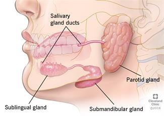

Sialadenitis

SYMPTOMS:
- Symptoms of sialadenitis include enlargement, tenderness, and redness of one or more salivary glands. These are the glands in the mouth, located near the ear (parotid), under the tongue (sublingual), and under the jaw bone (submaxillary), plus numerous small glands in the tongue, lips, cheeks and palate. Salivary stones (calculi) may block secretions from any of these glands. The gland may sometimes become infected, leading to fever and other complications.
-
Decreased salivary flow is a hallmark of both the acute and chronic forms of sialadenitis. The pain is more obvious while eating, and more than three-quarters of patients complain of dry mouth (xerostomia).
CAUSES:
- The exact cause of sialadenitis is unknown. In some cases, the condition may be associated with the formation of salivary gland stones (sialolithiasis).
DIAGNOSIS:
- The disorder is often diagnosed by means of a thorough patient history and physical examination. Recent advances in endoscopic equipment make the diagnosis somewhat easier.